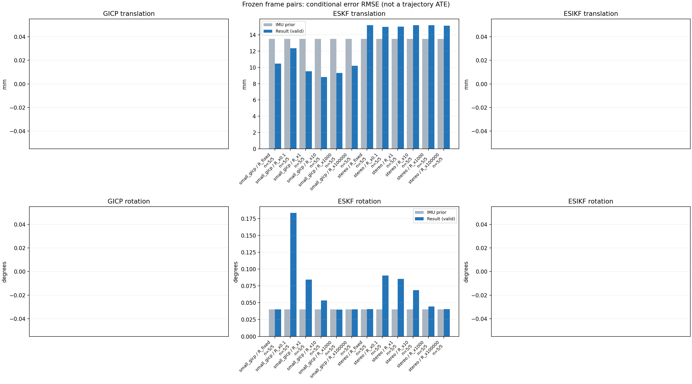

20261015_112659_forward · depth=disparity_cache · cache=ead80237a94ff12b4c9b
模型视差：/home/ubuntu22/slam/SIO_SLAM/models/tensorrt/disp_896x448_fp16.plan；engine SHA256=604cf6ac1f705c877260711730dd5d2d58c2a21f3020c03c668401ef7fb1e768。输入为生产裁剪与光照处理后的 RGB 0..255；此实验使用原始浮点像素视差，不应用完整前端的邻域视差后处理。
原始 ONNX SHA256：e9f49736a65d68d06681add463866b6defdf78fdd7f4f50f6cc941b682fdc0bc。
代价体图改写验证：ONNX Runtime 固定随机特征输入，最大绝对误差 0；该项检查图改写，完整模型精度仍需由录制数据评估。
配准代码版本：744ac2d993ae629b0cc44a3b1d995e04ab4fad48；观测生成版本：744ac2d993ae629b0cc44a3b1d995e04ab4fad48。
固定图像对与纯 IMU 先验；ESKF 回放固定 GICP 观测，ESIKF 直接读取点云。真值只用于此报告。
同时查看 converged 与 solver_status：上游默认 Stereo 在 max_iter / stopped_at_minimum 时也可能置 converged=true。valid 表示输入检查通过，不表示精度提升。欧氏 GICP 未提供独立的点距 RMSE，该列显示 NaN。
误差按每对图像的锚点计算，单位 m / degrees。此处 RMSE 不是全序列 ATE；末帧受同一锚点条件约束。NIS 与条件马氏距离是诊断量，少量相关图像对不能用于宣称协方差已校准。
全部指标 CSV · R / P / K 矩阵 CSV · Stereo 求解逐轮 CSV · ESIKF 逐轮 CSV · 配置快照 · 矢量图
| stage | method | variant | valid | total | translation RMSE (m) | rotation RMSE (deg) |
|---|---|---|---|---|---|---|
| eskf | small_gicp | R_fixed | 5 | 5 | 0.010467 | 0.040049 |
| eskf | small_gicp | R_x0.1 | 5 | 5 | 0.012355 | 0.18363 |
| eskf | small_gicp | R_x1 | 5 | 5 | 0.0095308 | 0.0845 |
| eskf | small_gicp | R_x10 | 5 | 5 | 0.0088086 | 0.053188 |
| eskf | small_gicp | R_x1000 | 5 | 5 | 0.0093066 | 0.039761 |
| eskf | small_gicp | R_x100000 | 5 | 5 | 0.010207 | 0.040082 |
| eskf | stereo | R_fixed | 5 | 5 | 0.015177 | 0.04066 |
| eskf | stereo | R_x0.1 | 5 | 5 | 0.014983 | 0.090309 |
| eskf | stereo | R_x1 | 5 | 5 | 0.015001 | 0.085514 |
| eskf | stereo | R_x10 | 5 | 5 | 0.015179 | 0.06884 |
| eskf | stereo | R_x1000 | 5 | 5 | 0.015174 | 0.044287 |
| eskf | stereo | R_x100000 | 5 | 5 | 0.015134 | 0.040627 |

| stage | case | method | variant | status | solver_status | inliers | converged | covariance_convention | covariance_from_hessian | fitness | registration_rmse_m | prior_trans_error_m | result_trans_error_m | prior_rot_error_deg | result_rot_error_deg | R_rot_trace_rad2 | R_pos_trace_m2 | nis_regularized |
|---|---|---|---|---|---|---|---|---|---|---|---|---|---|---|---|---|---|---|
| eskf | static_start | small_gicp | R_x0.1 | updated | 18971 | 1 | right_source_body | 1 | 0.97547 | nan | 9.0452e-05 | 0.011748 | 0.0025908 | 0.21884 | 1.0636e-07 | 1.5459e-06 | 382.69 | |
| eskf | static_start | small_gicp | R_x1 | updated | 18971 | 1 | right_source_body | 1 | 0.97547 | nan | 9.0452e-05 | 0.0023891 | 0.0025908 | 0.13452 | 1.0636e-06 | 1.5459e-05 | 95.302 | |
| eskf | static_start | small_gicp | R_x10 | updated | 18971 | 1 | right_source_body | 1 | 0.97547 | nan | 9.0452e-05 | 0.0017442 | 0.0025908 | 0.079247 | 1.0636e-05 | 0.00015459 | 13.387 | |
| eskf | static_start | small_gicp | R_x1000 | updated | 18971 | 1 | right_source_body | 1 | 0.97547 | nan | 9.0452e-05 | 0.00013816 | 0.0025908 | 0.0046127 | 0.0010636 | 0.015459 | 0.19454 | |
| eskf | static_start | small_gicp | R_x100000 | updated | 18971 | 1 | right_source_body | 1 | 0.97547 | nan | 9.0452e-05 | 9.0851e-05 | 0.0025908 | 0.0026061 | 0.10636 | 1.5459 | 0.0019671 | |
| eskf | static_start | small_gicp | R_fixed | updated | 18971 | 1 | right_source_body | 1 | 0.97547 | nan | 9.0452e-05 | 0.00018742 | 0.0025908 | 0.0062842 | 0.00022846 | 0.0012 | 1.2952 | |
| eskf | static_start | stereo | R_x0.1 | updated | max_iter | 16842 | 1 | left_target_body | 1 | 0.86985 | 0.078183 | 9.0452e-05 | 0.0053974 | 0.0025908 | 0.050859 | 5.1629e-10 | 7.3518e-09 | 37.292 |
| eskf | static_start | stereo | R_x1 | updated | max_iter | 16842 | 1 | left_target_body | 1 | 0.86985 | 0.078183 | 9.0452e-05 | 0.0052343 | 0.0025908 | 0.048715 | 5.1629e-09 | 7.3518e-08 | 35.738 |
| eskf | static_start | stereo | R_x10 | updated | max_iter | 16842 | 1 | left_target_body | 1 | 0.86985 | 0.078183 | 9.0452e-05 | 0.0041412 | 0.0025908 | 0.03677 | 5.1629e-08 | 7.3518e-07 | 25.527 |
| eskf | static_start | stereo | R_x1000 | updated | max_iter | 16842 | 1 | left_target_body | 1 | 0.86985 | 0.078183 | 9.0452e-05 | 0.00052498 | 0.0025908 | 0.012496 | 5.1629e-06 | 7.3518e-05 | 0.98026 |
| eskf | static_start | stereo | R_x100000 | updated | max_iter | 16842 | 1 | left_target_body | 1 | 0.86985 | 0.078183 | 9.0452e-05 | 9.5627e-05 | 0.0025908 | 0.0027093 | 0.00051629 | 0.0073518 | 0.010767 |
| eskf | static_start | stereo | R_fixed | updated | max_iter | 16842 | 1 | left_target_body | 1 | 0.86985 | 0.078183 | 9.0452e-05 | 0.00012324 | 0.0025908 | 0.0037392 | 0.00022846 | 0.0012 | 0.081394 |
| eskf | sync_motion | small_gicp | R_x0.1 | updated | 17092 | 1 | right_source_body | 1 | 0.92135 | nan | 0.0013397 | 0.0050647 | 0.011322 | 0.073789 | 1.6305e-07 | 2.2058e-06 | 1140.3 | |
| eskf | sync_motion | small_gicp | R_x1 | updated | 17092 | 1 | right_source_body | 1 | 0.92135 | nan | 0.0013397 | 0.0049881 | 0.011322 | 0.038101 | 1.6305e-06 | 2.2058e-05 | 136.69 | |
| eskf | sync_motion | small_gicp | R_x10 | updated | 17092 | 1 | right_source_body | 1 | 0.92135 | nan | 0.0013397 | 0.0039223 | 0.011322 | 0.013636 | 1.6305e-05 | 0.00022058 | 15.734 | |
| eskf | sync_motion | small_gicp | R_x1000 | updated | 17092 | 1 | right_source_body | 1 | 0.92135 | nan | 0.0013397 | 0.0014615 | 0.011322 | 0.012514 | 0.0016305 | 0.022058 | 0.16711 | |
| eskf | sync_motion | small_gicp | R_x100000 | updated | 17092 | 1 | right_source_body | 1 | 0.92135 | nan | 0.0013397 | 0.0013165 | 0.011322 | 0.011338 | 0.16305 | 2.2058 | 0.001698 | |
| eskf | sync_motion | small_gicp | R_fixed | updated | 17092 | 1 | right_source_body | 1 | 0.92135 | nan | 0.0013397 | 0.0041561 | 0.011322 | 0.01386 | 0.00022846 | 0.0012 | 2.9153 | |
| eskf | sync_motion | stereo | R_x0.1 | updated | max_iter | 15514 | 1 | left_target_body | 1 | 0.83221 | 0.10423 | 0.0013397 | 0.0034269 | 0.011322 | 0.057427 | 5.9283e-10 | 8.9362e-09 | 125.74 |
| eskf | sync_motion | stereo | R_x1 | updated | max_iter | 15514 | 1 | left_target_body | 1 | 0.83221 | 0.10423 | 0.0013397 | 0.0027427 | 0.011322 | 0.047425 | 5.9283e-09 | 8.9362e-08 | 80.934 |
| eskf | sync_motion | stereo | R_x10 | updated | max_iter | 15514 | 1 | left_target_body | 1 | 0.83221 | 0.10423 | 0.0013397 | 0.0016389 | 0.011322 | 0.036279 | 5.9283e-08 | 8.9362e-07 | 20.733 |
| eskf | sync_motion | stereo | R_x1000 | updated | max_iter | 15514 | 1 | left_target_body | 1 | 0.83221 | 0.10423 | 0.0013397 | 0.00035519 | 0.011322 | 0.020518 | 5.9283e-06 | 8.9362e-05 | 0.39069 |
| eskf | sync_motion | stereo | R_x100000 | updated | max_iter | 15514 | 1 | left_target_body | 1 | 0.83221 | 0.10423 | 0.0013397 | 0.0011705 | 0.011322 | 0.011516 | 0.00059283 | 0.0089362 | 0.0046745 |
| eskf | sync_motion | stereo | R_fixed | updated | max_iter | 15514 | 1 | left_target_body | 1 | 0.83221 | 0.10423 | 0.0013397 | 0.00080357 | 0.011322 | 0.011336 | 0.00022846 | 0.0012 | 0.04096 |
| eskf | main_motion | small_gicp | R_x0.1 | updated | 18289 | 1 | right_source_body | 1 | 0.8366 | nan | 0.0045997 | 0.019176 | 0.029347 | 0.095871 | 1.4859e-07 | 2.2973e-06 | 187.61 | |
| eskf | main_motion | small_gicp | R_x1 | updated | 18289 | 1 | right_source_body | 1 | 0.8366 | nan | 0.0045997 | 0.018409 | 0.029347 | 0.054247 | 1.4859e-06 | 2.2973e-05 | 25.392 | |
| eskf | main_motion | small_gicp | R_x10 | updated | 18289 | 1 | right_source_body | 1 | 0.8366 | nan | 0.0045997 | 0.016433 | 0.029347 | 0.032664 | 1.4859e-05 | 0.00022973 | 2.8734 | |
| eskf | main_motion | small_gicp | R_x1000 | updated | 18289 | 1 | right_source_body | 1 | 0.8366 | nan | 0.0045997 | 0.015032 | 0.029347 | 0.027341 | 0.0014859 | 0.022973 | 0.03156 | |
| eskf | main_motion | small_gicp | R_x100000 | updated | 18289 | 1 | right_source_body | 1 | 0.8366 | nan | 0.0045997 | 0.0080522 | 0.029347 | 0.028723 | 0.14859 | 2.2973 | 0.0006753 | |
| eskf | main_motion | small_gicp | R_fixed | updated | 18289 | 1 | right_source_body | 1 | 0.8366 | nan | 0.0045997 | 0.019597 | 0.029347 | 0.026959 | 0.00022846 | 0.0012 | 0.48498 | |
| eskf | main_motion | stereo | R_x0.1 | updated | max_iter | 15556 | 1 | left_target_body | 1 | 0.70935 | 0.13058 | 0.0045997 | 0.00098318 | 0.029347 | 0.043419 | 4.7819e-10 | 8.4301e-09 | 5.143 |
| eskf | main_motion | stereo | R_x1 | updated | max_iter | 15556 | 1 | left_target_body | 1 | 0.70935 | 0.13058 | 0.0045997 | 0.0010477 | 0.029347 | 0.043369 | 4.7819e-09 | 8.4301e-08 | 4.7106 |
| eskf | main_motion | stereo | R_x10 | updated | max_iter | 15556 | 1 | left_target_body | 1 | 0.70935 | 0.13058 | 0.0045997 | 0.0013748 | 0.029347 | 0.043944 | 4.7819e-08 | 8.4301e-07 | 2.6822 |
| eskf | main_motion | stereo | R_x1000 | updated | max_iter | 15556 | 1 | left_target_body | 1 | 0.70935 | 0.13058 | 0.0045997 | 0.0018748 | 0.029347 | 0.036131 | 4.7819e-06 | 8.4301e-05 | 0.27008 |
| eskf | main_motion | stereo | R_x100000 | updated | max_iter | 15556 | 1 | left_target_body | 1 | 0.70935 | 0.13058 | 0.0045997 | 0.0033307 | 0.029347 | 0.029873 | 0.00047819 | 0.0084301 | 0.0058004 |
| eskf | main_motion | stereo | R_fixed | updated | max_iter | 15556 | 1 | left_target_body | 1 | 0.70935 | 0.13058 | 0.0045997 | 0.0013056 | 0.029347 | 0.029967 | 0.00022846 | 0.0012 | 0.0078175 |
| eskf | main_motion_long | small_gicp | R_x0.1 | updated | 15698 | 1 | right_source_body | 1 | 0.69837 | nan | 0.028091 | 0.005144 | 0.084242 | 0.082695 | 1.7203e-07 | 2.618e-06 | 217.61 | |
| eskf | main_motion_long | small_gicp | R_x1 | updated | 15698 | 1 | right_source_body | 1 | 0.69837 | nan | 0.028091 | 0.0060439 | 0.084242 | 0.06754 | 1.7203e-06 | 2.618e-05 | 71.167 | |
| eskf | main_motion_long | small_gicp | R_x10 | updated | 15698 | 1 | right_source_body | 1 | 0.69837 | nan | 0.028091 | 0.0075939 | 0.084242 | 0.076647 | 1.7203e-05 | 0.0002618 | 23.813 | |
| eskf | main_motion_long | small_gicp | R_x1000 | updated | 15698 | 1 | right_source_body | 1 | 0.69837 | nan | 0.028091 | 0.011456 | 0.084242 | 0.083455 | 0.0017203 | 0.02618 | 0.36999 | |
| eskf | main_motion_long | small_gicp | R_x100000 | updated | 15698 | 1 | right_source_body | 1 | 0.69837 | nan | 0.028091 | 0.020122 | 0.084242 | 0.084016 | 0.17203 | 2.618 | 0.0053217 | |
| eskf | main_motion_long | small_gicp | R_fixed | updated | 15698 | 1 | right_source_body | 1 | 0.69837 | nan | 0.028091 | 0.01004 | 0.084242 | 0.08383 | 0.00022846 | 0.0012 | 0.34063 | |
| eskf | main_motion_long | stereo | R_x0.1 | updated | max_iter | 13796 | 1 | left_target_body | 1 | 0.61098 | 0.14699 | 0.028091 | 0.032609 | 0.084242 | 0.13298 | 6.4807e-10 | 1.2354e-08 | 92.443 |
| eskf | main_motion_long | stereo | R_x1 | updated | max_iter | 13796 | 1 | left_target_body | 1 | 0.61098 | 0.14699 | 0.028091 | 0.032741 | 0.084242 | 0.12475 | 6.4807e-09 | 1.2354e-07 | 81.183 |
| eskf | main_motion_long | stereo | R_x10 | updated | max_iter | 13796 | 1 | left_target_body | 1 | 0.61098 | 0.14699 | 0.028091 | 0.033357 | 0.084242 | 0.097712 | 6.4807e-08 | 1.2354e-06 | 36.816 |
| eskf | main_motion_long | stereo | R_x1000 | updated | max_iter | 13796 | 1 | left_target_body | 1 | 0.61098 | 0.14699 | 0.028091 | 0.03341 | 0.084242 | 0.083552 | 6.4807e-06 | 0.00012354 | 0.68907 |
| eskf | main_motion_long | stereo | R_x100000 | updated | max_iter | 13796 | 1 | left_target_body | 1 | 0.61098 | 0.14699 | 0.028091 | 0.032879 | 0.084242 | 0.084893 | 0.00064807 | 0.012354 | 0.0077874 |
| eskf | main_motion_long | stereo | R_fixed | updated | max_iter | 13796 | 1 | left_target_body | 1 | 0.61098 | 0.14699 | 0.028091 | 0.03352 | 0.084242 | 0.084928 | 0.00022846 | 0.0012 | 0.13653 |
| eskf | static_end | small_gicp | R_x0.1 | updated | 13258 | 1 | right_source_body | 1 | 0.88381 | nan | 0.0099324 | 0.014329 | 0.0040144 | 0.31501 | 2.7813e-07 | 3.309e-06 | 472.74 | |
| eskf | static_end | small_gicp | R_x1 | updated | 13258 | 1 | right_source_body | 1 | 0.88381 | nan | 0.0099324 | 0.0069404 | 0.0040144 | 0.092999 | 2.7813e-06 | 3.309e-05 | 78.245 | |
| eskf | static_end | small_gicp | R_x10 | updated | 13258 | 1 | right_source_body | 1 | 0.88381 | nan | 0.0099324 | 0.0064671 | 0.0040144 | 0.02715 | 2.7813e-05 | 0.0003309 | 9.0859 | |
| eskf | static_end | small_gicp | R_x1000 | updated | 13258 | 1 | right_source_body | 1 | 0.88381 | nan | 0.0099324 | 0.0085848 | 0.0040144 | 0.0037811 | 0.0027813 | 0.03309 | 0.11067 | |
| eskf | static_end | small_gicp | R_x100000 | updated | 13258 | 1 | right_source_body | 1 | 0.88381 | nan | 0.0099324 | 0.0070304 | 0.0040144 | 0.0036934 | 0.27813 | 3.309 | 0.0011727 | |
| eskf | static_end | small_gicp | R_fixed | updated | 13258 | 1 | right_source_body | 1 | 0.88381 | nan | 0.0099324 | 0.0067584 | 0.0040144 | 0.005798 | 0.00022846 | 0.0012 | 3.9763 | |
| eskf | static_end | stereo | R_x0.1 | updated | max_iter | 11625 | 1 | left_target_body | 1 | 0.77863 | 0.08572 | 0.0099324 | 0.0041647 | 0.0040144 | 0.12379 | 8.8153e-10 | 1.2167e-08 | 22.391 |
| eskf | static_end | stereo | R_x1 | updated | max_iter | 11625 | 1 | left_target_body | 1 | 0.77863 | 0.08572 | 0.0099324 | 0.0041503 | 0.0040144 | 0.1204 | 8.8153e-09 | 1.2167e-07 | 21.563 |
| eskf | static_end | stereo | R_x10 | updated | max_iter | 11625 | 1 | left_target_body | 1 | 0.77863 | 0.08572 | 0.0099324 | 0.0041904 | 0.0040144 | 0.097714 | 8.8153e-08 | 1.2167e-06 | 15.813 |
| eskf | static_end | stereo | R_x1000 | updated | max_iter | 11625 | 1 | left_target_body | 1 | 0.77863 | 0.08572 | 0.0099324 | 0.0055819 | 0.0040144 | 0.030714 | 8.8153e-06 | 0.00012167 | 0.92369 |
| eskf | static_end | stereo | R_x100000 | updated | max_iter | 11625 | 1 | left_target_body | 1 | 0.77863 | 0.08572 | 0.0099324 | 0.0071851 | 0.0040144 | 0.003703 | 0.00088153 | 0.012167 | 0.013998 |
| eskf | static_end | stereo | R_fixed | updated | max_iter | 11625 | 1 | left_target_body | 1 | 0.77863 | 0.08572 | 0.0099324 | 0.0050724 | 0.0040144 | 0.003575 | 0.00022846 | 0.0012 | 0.079494 |